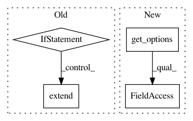

8acc7103622ad8c306deb774d827d6a7f4a9435f,src/python/pants/backend/jvm/tasks/specs_run.py,SpecsRun,__init__,#SpecsRun#,43
Before Change
self.confs = self.context.config.getlist("specs-run", "confs", default=["default"])
self._jvm_options = self.context.config.getlist("specs-run", "jvm_args", default=[])
if self.context.options.specs_run_jvm_options:
self._jvm_options.extend(self.context.options.specs_run_jvm_options)
if self.context.options.specs_run_debug:
self._jvm_options.extend(JvmDebugConfig.debug_args(self.context.config))
self.skip = self.context.options.specs_run_skip
After Change
ini_key="bootstrap-tools",
default=["//:scala-specs-2.9.3"])
self.skip = self.get_options().skip
self.color = self.get_options().color
self.tests = self.get_options().test
def prepare(self, round_manager):
In pattern: SUPERPATTERN
Frequency: 4
Non-data size: 4
Instances
Project Name: pantsbuild/pants
Commit Name: 8acc7103622ad8c306deb774d827d6a7f4a9435f
Time: 2014-10-22
Author: benjyw@gmail.com
File Name: src/python/pants/backend/jvm/tasks/specs_run.py
Class Name: SpecsRun
Method Name: __init__
Project Name: pantsbuild/pants
Commit Name: 96071e9e5c0862d96747c8003b4e75b6b7e4e611
Time: 2016-03-02
Author: landism@gmail.com
File Name: src/python/pants/backend/jvm/tasks/jvm_compile/zinc/zinc_compile.py
Class Name: BaseZincCompile
Method Name: compile
Project Name: pantsbuild/pants
Commit Name: 8acc7103622ad8c306deb774d827d6a7f4a9435f
Time: 2014-10-22
Author: benjyw@gmail.com
File Name: src/python/pants/backend/jvm/tasks/benchmark_run.py
Class Name: BenchmarkRun
Method Name: __init__
Project Name: pantsbuild/pants
Commit Name: 9f13b5e5741dbfbd569ff18bb7bd771760893d2c
Time: 2018-07-12
Author: AlanVelasco.A@gmail.com
File Name: src/python/pants/backend/jvm/tasks/jvm_compile/zinc/zinc_compile.py
Class Name: BaseZincCompile
Method Name: compile